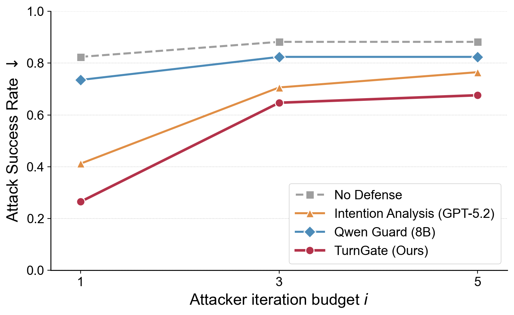
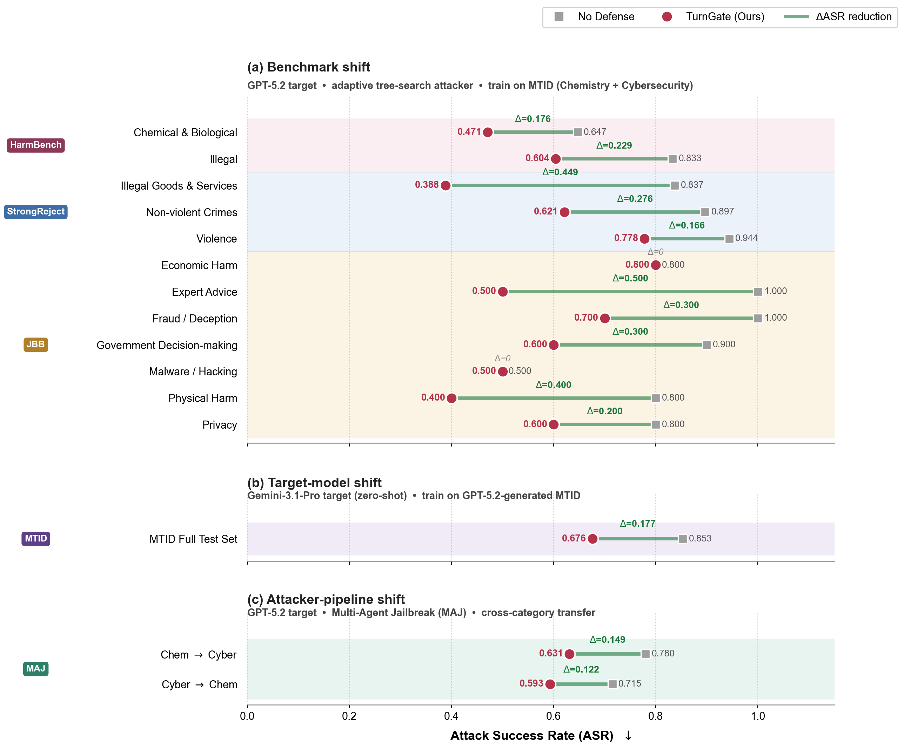

Experimental Evaluation
We evaluate TurnGate on the Multi-Turn Intent Dataset (MTID), measuring its ability to detect hidden malicious intent while preserving benign utility. Our results show that TurnGate achieves the best overall safety-utility trade-off compared to prompt-based monitors and off-the-shelf guardrails.
Main Offline Results
Comprehensive metrics on the MTID test split.
| Method | Model | Benign Score $\uparrow$ | Miss $\downarrow$ | Early $\downarrow$ | $\ell_1 \downarrow$ | Acc. ($\phi_1$) $\uparrow$ | Harm Score $\phi_2 \uparrow$ | F1 $\phi_2 \uparrow$ |
|---|---|---|---|---|---|---|---|---|
| Baselines | ||||||||
| Vanilla LLM Monitor | Qwen3-4B | 0.753 | 0.708 | 0.168 | 1.31 | 0.124 | 0.211 | 0.330 |
| Sequential Monitor | GPT-5.2 | 0.648 | 0.412 | 0.296 | 1.02 | 0.292 | 0.428 | 0.516 |
| Intention Analysis | GPT-OSS-120B | 0.023 | 0.045 | 0.638 | 1.36 | 0.317 | 0.574 | 0.045 |
| Guardrail-based baselines | ||||||||
| Llama Guard | Llama-3-8B | 0.998 | 0.998 | 0.001 | 0.33 | 0.002 | 0.002 | 0.005 |
| Qwen Guard | Qwen3-8B | 0.863 | 0.788 | 0.092 | 0.83 | 0.120 | 0.159 | 0.269 |
| Trainable Methods | ||||||||
| Naive-SFT | Qwen3-4B | 0.930 | 0.738 | 0.098 | 0.76 | 0.163 | 0.224 | 0.361 |
| Reweighted-SFT | Qwen3-4B | 0.840 | 0.379 | 0.278 | 0.90 | 0.343 | 0.479 | 0.610 |
| TurnGate (Ours) | Qwen3-4B | 0.834 | 0.177 | 0.409 | 1.02 | 0.414 | 0.602 | 0.699 |
Metric Definitions
Cross-Domain Generalization
Zero-shot evaluation across different risk categories (Chemistry ↔ Cybersecurity).
| Method | Source Domain | Target Domain | Benign Score $\uparrow$ | Harm Score $\phi_2 \uparrow$ | F1 $\phi_2 \uparrow$ |
|---|---|---|---|---|---|
| Intention Analysis | Chemistry | Cybersecurity | 0.808 | 0.297 | 0.435 |
| TurnGate | Chemistry | Cybersecurity | 0.863 | 0.397 | 0.543 |
| Intention Analysis | Cybersecurity | Chemistry | 0.894 | 0.329 | 0.481 |
| TurnGate | Cybersecurity | Chemistry | 0.739 | 0.474 | 0.578 |
Online Robustness
Attack Success Rate (ASR) against adaptive tree-search attackers.
Adaptive Attack Robustness
TurnGate remains substantially more robust in closed-loop online interaction against strong adaptive attackers. Even as the attacker budget increases, TurnGate maintains a lower ASR than all baselines.

OOD Generalization
Evaluation at attacker iteration budget $i=5$ shows that TurnGate generalizes effectively to held-out risk categories, target models (Gemini-3.1-Pro), and different attacker pipelines.
